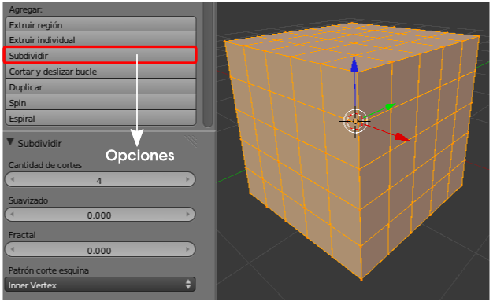
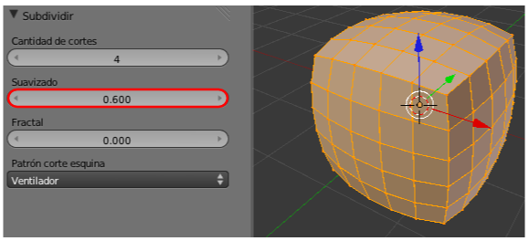
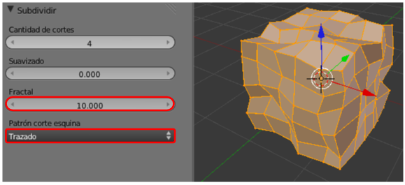
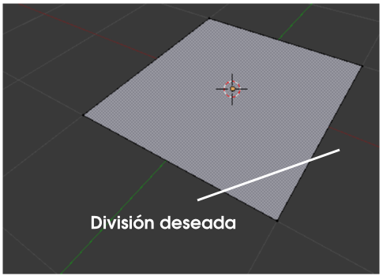
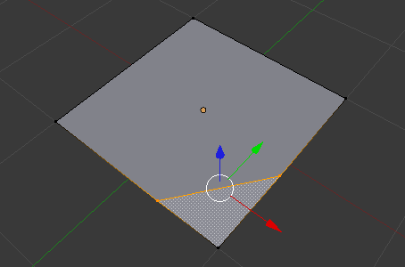
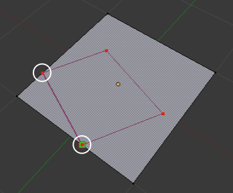
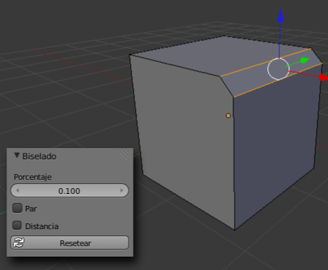
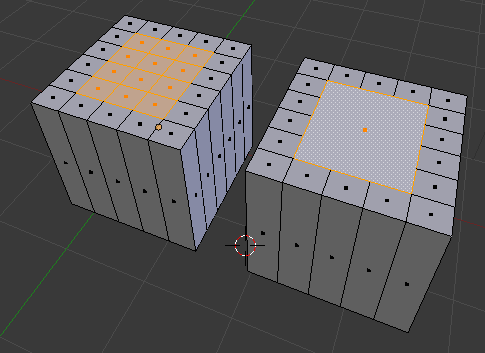
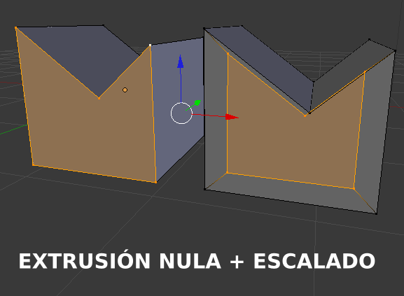
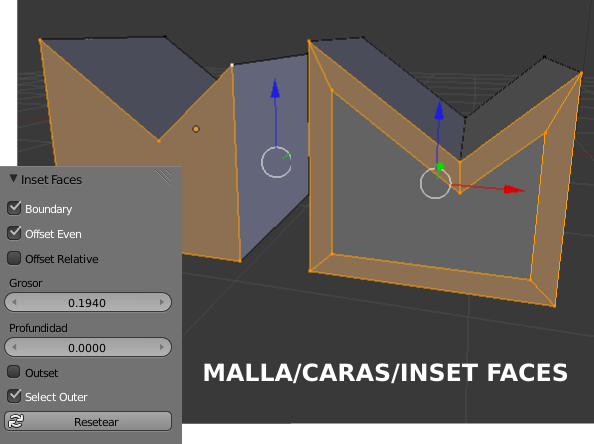

Subdividir
Hemos visto que en una curva bézier es fácil añadir un nuevo nodo entre dos ya existentes. Dividir una malla es igual de fácil. Lo habitual es una subdivisión masiva de todas los lados de la malla. Tras pulsar el botón Subdividir en el cuadro Herramientas ("T") disponemos de varias opciones.
- Cantidad de cortes. No requiere explicación.
- Suavizado. Trata de crear una unión con curva suave entre los dos vértices del lado dividido. En esta edición los vértices seleccionados siempre permanecen en su sitio.

- Fractal. Los vértices resultantes se distribuyen de manera aleatoria según las condiciones marcadas por las fórmulas del campo Patrón del corte de esquina situado justo debajo. Nuevamente los vértices originales no se desplazan en esta edición.

Esta subdivisión automática tiene como limitación que la separación entre las partes es igual. Si queremos añadir vértices en lugares concretos de la malla, como puede ser el indicado en la siguiente imagen...

… tenemos que usar la herramienta Cuchillo (Knife cut) que activamos (en Modo Edición  ) pulsando la tecla "K"; después dibujamos con el botón izquierdo del ratón pulsado.
) pulsando la tecla "K"; después dibujamos con el botón izquierdo del ratón pulsado.
En ese proceso de dibujo se nos representan en tiempo real, y de color verde, los nodos que se van a crear. Cuando decidimos su posición concluimos la edición con un clic. Sin embargo Blender no abandona la edición y se mantiene con la herramienta cuchillo activa por si queremos hacer algún corte más. Ahora:
- "Intro". Concluye la edición materializando los cortes.

- "Esc". Cierra la edición sin materializar los cortes.
BMesh
Siempre hemos trabajado con triángulos y quads (entidades poligonales de cuatro vértices que pueden no ser coplanares) pero si nos fijamos en la última imagen vemos que hay un polígono de cinco lados. La tecnología de triángulos y quads está basada en F-gons (entidades poligonales de tres o cuatro vértices) mientras que esto que estamos viendo se fundamenta en N-gons (entidades de más de cuatro vértices). Blender tuvo que esperar a la versión 2.63 para ver hecho realidad el sueño de los N-gons bajo el nombre de modelado BMesh.
Estas son las ediciones fundamentales del modelado BMesh.
CORTE
Lo acabamos de ver; sin embargo debemos tener en cuenta:
- Es necesario cortar al menos dos lados para que la técnica funcione.

- Si no cortamos ningún lado se crea un agujero.
BISEL
Gracias a BMesh se consiguen biseles muy fácilmente en lados independientes. Seleccionamos el lado en cuestión y hacemos Malla/Aristas/Biselado (o "W"/Biselado). En el panel de Herramientas ("T") aparece la opción Porcentaje para determinar el tamaño. En las versiones de desarrollo para Blender 2.63 se pudo disfrutar de una segunda opción que determinaba el contorno redondeado del bisel. Sin embargo en la versión definitiva se suprimió a la espera de mejores resultados con lo que su inclusión en alguna versión posterior está asegurada.
CREAR N-GONS
- Seleccionamos las caras deseadas y usamos Malla/Disolver.

- En el caso de un agujero, seleccionamos los lados deseados y pulsamos "F".
EXTRUSIÓN
Los N-gons se extruyen como cualquier otra cara pero destacamos una extrusión muy peculiar.
Frente a una extrusión nula ("E+Intro") con un escalado ("S") en la que la distancia entre lados paralelos puede no ser igual...

...podemos hacer Malla/Caras/Inset Faces y editar sus opciones en el cuadro Herramientas ("T").

Vemos cómo se produce una dilatación/contracción que garantiza la distancia entre las paralelas.